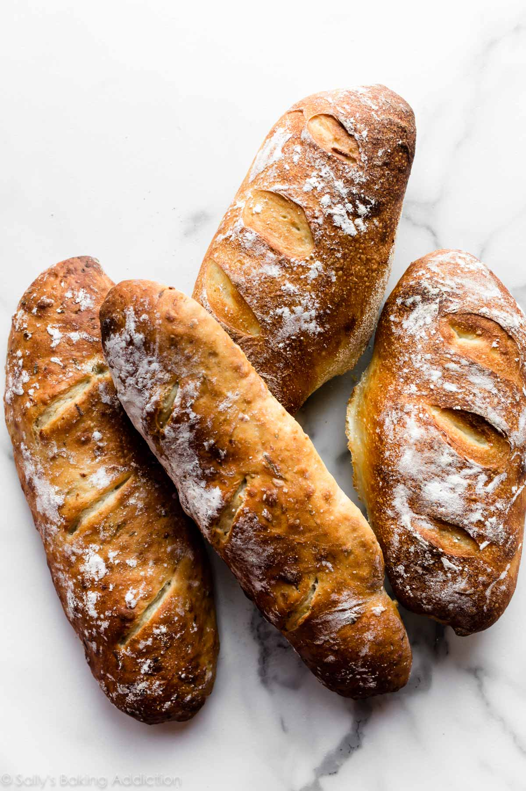

Domaći kurh jedan je od najjednostavnijih recepata koji možemo pripremiti kod kuće. Potrebno je samo nekoliko osnovnih sastojaka. malo vremena i strpljenja
Količina vode može se malo prilagoditi ovisno o vrsti brašna. omjer vode i
brašna može se zabisati kao voda / brašno
Za ovaj recept koristimo približno 50% vode u odnosu na količinu brašna

Temperatura pečenja može biti oko 220oC. Vrijeme pečenja ovisi o veličini kruha.
Tijesto treba biti mekano i blago lijepljivo, Ako je tijesto pretvrdo, potrebno je dodati malo vode. Ako je previše lijepljivo, može se dodati mala količina brašna.
"Dobar kruh traži samo nekoliko sastojaka, ali najviše strpljenja."
Stara kuhinjska izreka
Ako želite naučiti više o pečenju kruha, posjetite stranicu o kruhu
Brašno
Osnovni sastojak od kojeg se priprema tijesto.Kvasac
Mikroorganizam koji omogućuje dizanje tijesta.Gluten
Bjelančevina koja tijestu daje elastičnost i strukturu.Fermentacija
Proces tijekom kojeg kvasac proizvodi plinove i omogućuje rast tijesta.
Kemijska formula vode je H2O. a temperatura od 100oC predstavlja približnu temperaturu vrelišsta vode pri normalnom atmosferskom tlaku.
Jednostavan postupak za provjeru je:umijesi - ostavi - oblikuj - ispeci